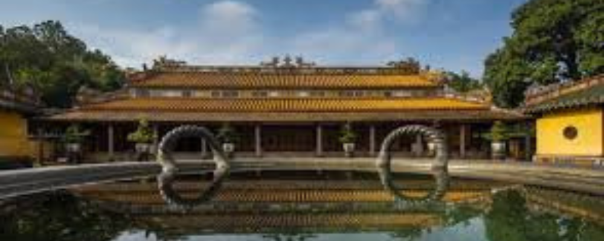

Hệ Thống Lăng Tẩm
Ngày đăng: 7/10/2024 - 10:15
Công trình kiến trúc mang vẻ đẹp cổ kim hòa hợp
Giới thiệu chung
Lăng vua Ðồng Khánh, còn gọi là Tư Lăng (思陵) là một di tích thuộc quần thể di tích cố đô Huế, là nơi an táng vua Đồng Khánh - vị hoàng đế thứ chín của nhà Nguyễn trong lịch sử Việt Nam, tại vị từ năm 1888 đến 1889.
Đây là ngôi lăng mộ đặc biệt và duy nhất được xây dựng qua bốn đời vua mới hoàn thành (1888 - 1923).
Nằm giữa hai lăng Thiệu Trị và Tự Đức, lăng Đồng Khánh thuộc địa phận làng Cư Sĩ, tổng Dương Xuân, ngày nay là thôn Thượng Hai, xã Thủy Xuân, thành phố Huế. Ngày 11 tháng 12 năm 1993, lăng vua Đồng Khánh được UNESCO công nhận là Di sản văn hóa thế giới.
Lịch sử hình thành
Trong giai đoạn rối ren của lịch sử phong kiến Việt Nam với "tứ nguyệt tam vương" dưới thời nhà Nguyễn, trong vòng 4 tháng, có tới 3 vị vua thay nhau trị vì, gồm vua Dục Đức, vua Hiệp Hòa và vua Kiến Phúc; Ðồng Khánh tên là Nguyễn Phúc Ưng Ðường, con trai cả của Kiên Thái Vương Nguyễn Phúc Hồng Cai (1845-1876), là anh của vua Kiến Phúc và vua Hàm Nghi nhưng lại được đưa lên ngai vàng sau cùng.
Sau khi lên ngôi (tháng 2/1888), vua Đồng Khánh cho xây dựng bên lăng mộ của vua cha ngôi điện đặt tên là Truy Tư để thờ cúng cha. Công việc đang triển khai thì vua Đồng Khánh mắc bệnh và đột ngột băng hà.
Vua Thành Thái (1889-1907) kế vị trong bối cảnh đất nước gặp nhiều khó khăn, kinh tế suy kiệt nên không thể xây cất lăng tẩm quy củ cho vua tiền nhiệm, đành lấy điện Truy Tư đổi làm Ngưng Hy để thờ vua Ðồng Khánh. Thi hài nhà vua cũng được an táng đơn giản trên quả đồi có tên là Hộ Thuận Sơn, cách điện Ngưng Hy 30m về phía Tây. Toàn bộ khu lăng tẩm được gọi tên là Tư Lăng.
Năm 1916, con trai của vua Đồng Khánh lên ngôi (tức vua Khải Định) đã cho tu sửa điện thờ, xây cất lăng mộ cho cha mình. Toàn bộ khu lăng mộ từ Bái đình, Bi đình đến Bửu thành và Huyền cung đều được kiến thiết đến tháng 7/1917 mới xong phần cơ bản và đến năm 1923 thì hoàn tất.
Ngày 30/1/2022, Lăng vua Đồng Khánh được đưa vào khai thác du lịch sau thời gian dài đóng cửa, trùng tu.
Đặc điểm nổi bật
.jpg)
Công trình kiến trúc nổi bật về mặt mỹ thuật ở lăng Đồng Khánh là điện Ngưng Hy, là một toà nhà kép làm theo kiểu thức chung của loại cung điện Huế, nhưng ở phần sau lại được gia tăng thêm một toà nhà thứ ba nữa (nhà hậu). Thành ra ở đây có đến 3 hệ thống vì kéo được ghép lại với nhau theo hình chữ "tam" với hai hệ thống máng xối ở giữa. Mặt bằng thực tế của toà nhà rất rộng, nhưng trông vẫn gọn gàng xinh xắn, có lẽ nhờ cách trang trí ở nội ngoài thất.
.jpg)
Vật liệu trang trí trên các bờ nóc, bờ quyết, cổ diềm, đầu hồi, đều làm bằng pháp lam ngũ sắc hoặc đất nung tráng men màu. Được phân khoản trong từng ô hộc, hàng trăm hình ảnh và câu thơ xen kẽ nhau chạy quanh trên cả toà nhà. Ở đó người xưa đã diễn tả rất nhiều sinh hoạt cổ truyền và cảnh vật dân gian như ngư tiều canh mục, cầm kỳ thi tửu, ngư ông đắc lợi,... con gà, con rắn, tắc kè, voi, ngựa, các thứ động vật và cây cỏ thông thường khác. Có giá trị đặc biệt nhất ở đây là loại đất nung tráng men màu. Loại này được phát triển mạnh ở điện Ngưng Hy để sau đó ít thấy dùng trong trang trí cung điện và lăng tẩm. Đây là một loại hình tạo tác thủ công mỹ nghệ đặc sắc và quý hiếm của địa phương.
Bên trong điện, các nghệ nhân đầu thế kỷ đã tạo ra được một không gian nội thất vàng son lộng lẫy. Hàng trăm hình ảnh và câu thơ được chạm khắc hoặc viết vẽ lên các panô và hệ thống kiên ba đồ bản. Hệ thống cột kèo tiền điện cũng sơn son thếp vàng. Màu sắc mọi hình ảnh trang trí đều còn đậm đà, chói lọi. Một loại hình ảnh trang trí độc đáo ở nội thất Ngưng Hy là vẻ cảnh sinh hoạt của 24 câu chuyện trong "Nhị thập tứ hiếu" thể hiện tấm lòng hiếu thảo của vua Khải Định đối với vua cha.
.jpg)
Trong bài viết "Di sản văn hóa thế giới di tích cố đô Huế - 20 năm nhìn lại" của GS.TSKH Lưu Trần Tiêu có nhận định: "Cái đẹp của kiến trúc Huế không hẳn là sự lộng lẫy, hoành tráng về quy mô, mà là sự mực thước trong kết cấu, dáng vẻ, sự hòa quyện, sự hài hòa giữa công trình kiến trúc và môi trường cảnh quan thiên nhiên". Cũng giống như các ngôi lăng của các vị vua tiền nhiệm như Gia Long, Minh Mạng, Thiệu Trị, Tự Đức, Lăng vua Đồng Khánh mang nét đẹp hài hòa giữa yếu tố thiên nhiên và kiến trúc đăng đối, tinh xảo từ bàn tay tạo tác của các nghệ nhân xưa.
Về mô thức kiến trúc, lăng Đồng Khánh có khoảng 20 công trình kiến trúc lớn nhỏ với mật độ tương đối dày. Khu vực tẩm quay về hướng đông nam, ngay trước mặt có đào hồ bán nguyệt trồng sen để làm yếu tố "minh đường" và ngọn đồi Thiên An cách đó khoảng 3km được dùng làm "tiền án".
.jpg)
Cấu trúc chung khu lăng Đồng Khánh không khác mấy với các lăng khác: quay về hướng Đông - Đông Nam, lấy núi Thiên Thai làm tiền án; sân Bái đình có hàng tượng quan quân chầu, Trụ biểu, Bi đình, Bửu thành theo truyền thống. Nhưng từ kiến trúc, trang trí đến vật liệu xây dựng hầu như đều được “Âu hoá”. Nếu tượng các quan viên ở lăng Tự Đức được tạc bằng đá với cỡ người quá thấp, thì ngược lại, tượng các quan viên ở lăng Đồng Khánh được đắp bằng vôi gạch với dáng cao nhưng gầy; ngói ardoise thay cho hoàng liên. Đặc biệt, Bi đình (nơi dựng bia đá) có lối kiến trúc Tân cổ điển Tây phương pha trộn phong cách Á Đông truyền thống, gần với kiến trúc lăng vua Khải Định sau này.
Được xây dựng và hoàn thiện trong quá trình dài suốt 35 năm, lăng vua Ðồng Khánh mang dấu ấn hai trường phái kiến trúc của hai thời điểm lịch sử khác nhau. Nếu phong cách cổ truyền thực sự dừng chân trong kiến trúc lăng Tự Đức và phong cách hiện đại được thể hiện rõ nét trong kiến trúc lăng Khải Định sau này thì lăng Ðồng Khánh là một bước trung chuyển. Trong đó, điện Ngưng Hy được coi là nơi bảo lưu bậc nhất nghệ thuật sơn son thếp vàng, nghệ thuật sơn mài nổi tiếng của Việt Nam.
Vị trí
Đoàn Nhữ Hải, Thủy Xuân, Thành phố Huế, Thừa Thiên Huế.
LIÊN HỆ ĐỂ ĐẶT TOUR: